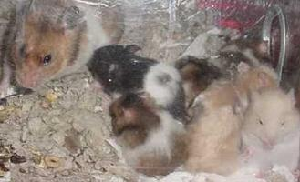

| You have to love a hamster that smiles. He peered up from his nest with a wide-eyed grin and raised his head to sniff me nose to nose. I scooped him up, and he snuffled at my fingers a bit, then snuggled deeper and fell asleep against my chest like-- well... like an Angel. My husband had already named him that from the rescuer's description of long "wings" and a golden halo. His rescuer's name was Angela. Angel is a 4.75" Syrian who weighed less than 3.75 oz. He bit me firmly once to see what I was, and has been perfectly gentle and cuddly since. He certainly had no reason to be. He and a young female were abandoned at a shelter in August and were promptly forgotten in a records error. They were together in a 10-gallon tank on a shelf in a back room, on cedar with newspaper for nesting, eating cavy food alongside their roommates. Someone thought someone was picking them up, and someone didn't notice that no one ever did. The card on the tank said they'd been adopted, but it was ten weeks old. Fortunately they were warm, fed and watered. But they weren't noisy. They weren't demanding. So they weren't cuddled or exercised or loved for ten weeks of their young lives -- the equivalent of seven years of human lifetime. Someone finally noticed, and filed a euthanization order. No calls had gone out, and potential small-animal adopters had been told there were no hamsters. Shelters are designed for animals with longer life spans, and they're swamped. These wee ones were lost in a system that's so overwhelmed that volunteers' calls can't go out till animals are on Death Row. Nobody who could help knew they were alive until they were about to be killed. And then came their angels. A shelter volunteer phoned rabbit/cavy rescuer Angela Carrigan about the pair. Angela brought me Possum Bear last spring. She e-mailed me and went to pick up the pair for her husband to bring here But she didn't find two hamsters. She found eleven. Their litter of nine was born on urine-soaked cedar in a nest of wet newspaper. The pups were two days old. Angela took the tank home and sent me a frantic email. We decided not to risk moving them again, so she fed them well and spot cleaned, replacing the wet mess with healthy litter and bedding. Mom was amazingly calm and busied herself making a clean place to cover the wee ones. Dozens of e-mails and phone calls and prayers later, they were all furry and squeaky and thriving. Angel didn't mind missing all the excitement. He was creating plenty on his own. He gained weight and blossomed into an energetic, curious little wonder -- a cross between a Teddy bear and a rocket. He panicked at his first wheel. Everything hamster was foreign and scary. Sounds I barely noticed made him jump an inch. He'd run away, then dash back to hands. It was the only place besides his nest where he didn't twitch. He zipped from corner to corner in his treatment cage, afraid of the food dish even. He slept safe and snug in his little Critter Keeper. He escaped during his first week here, and I panicked - such a tiny stranger to go missing. I walked through the house calling his name, knowing it was crazy. Why on earth would he trust a human voice? But in less than a minute, out he strolled, right into my hands. The rest of his family arrived just before Thanksgiving. Our daughter christened the mom Mary, and she is indeed the mother of miracles. The tiny, fuzzy cricket-frogs had started wobbling out of the nest at Day 17, and nibbling at solids on the 21st, the day they arrived here. I've had three-week old dwarf Campbells who were larger. I hand-fed Mary and the babies round the clock. The first day here, they ate over 12 oz. of fresh foods and dry seed and grain mix and drank over 4 oz. of a homemade formula of KMR Emergency Formula powder reconstituted with Pedialyte, soy milk, plain yogurt and vitamin drops. Mary was wonderful about letting me handle the pups - even handing them to me. She was emaciated with a desperate look, but couldn't possibly have been a better mother. The last ear opened on Day 23, and the last three eyes appeared the next day. In those four days, Mary and the pups ate nearly five pounds of formula and food, including tofu with sesame seeds mashed in, broccoli florets dipped in KMR powder, lab blocks and Cheerios softened in plain yogurt/soy milk, peas, carrots, bananas, pears, apple, asparagus, steamed chicken dusted with nutritional yeast and piles of hamster mix with extra millet. The babies grew twice their size, and Mary's 5.5" frame reached 3.5 oz. The pups are gorgeous and wonderfully curious and eager to be held and wander people. They pile up at the cage door when I pass, hoping to be the first one out. These little miracles have had a rough start. They'll be here a little while longer, but they'll be ready for loving forever homes in time for Christmas. If you'd like to adopt one of these wee wonders in the next few weeks, please email me. I can't provide a long pedigree, but they certainly carry the survivor gene. Please contact Jane at janelandis@earthlink.net to reserve one of these pups. They were born on Oct. 31, and many are satins. We are asking for a $10 donation to help cover the costs of this litter and other rescues. |
| Angel by Jane Landis |
|  |